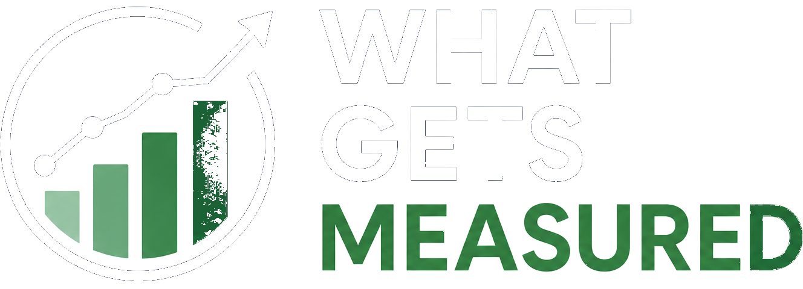
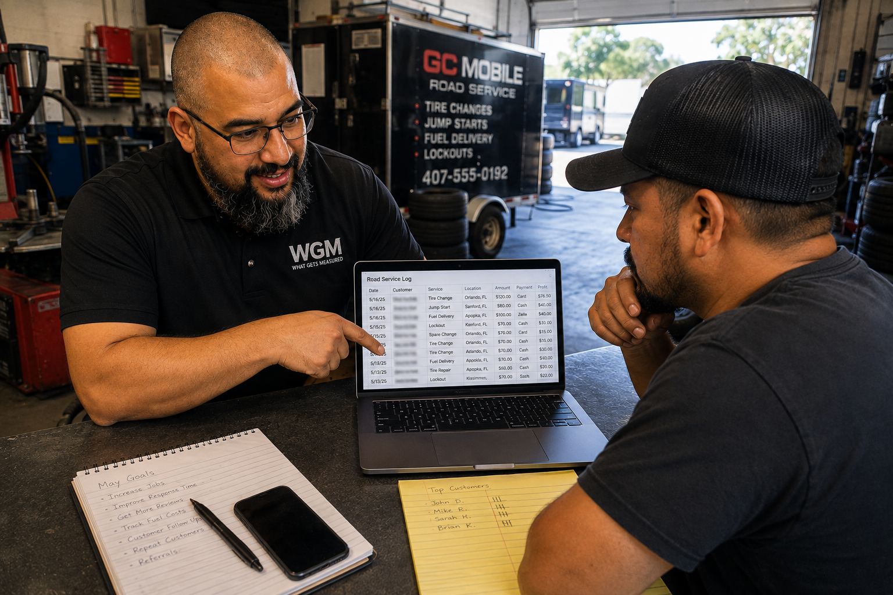
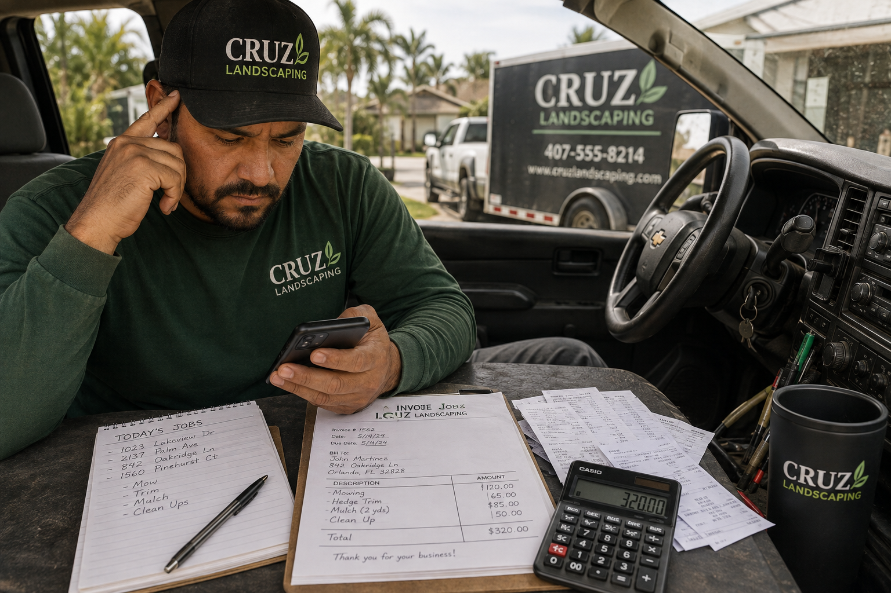
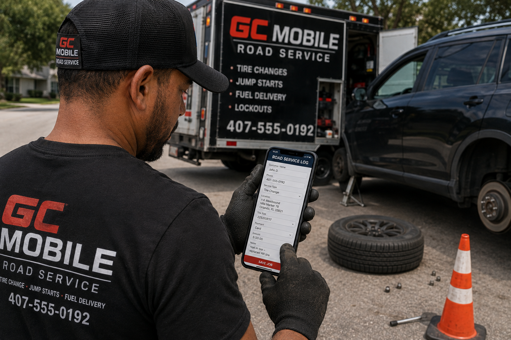
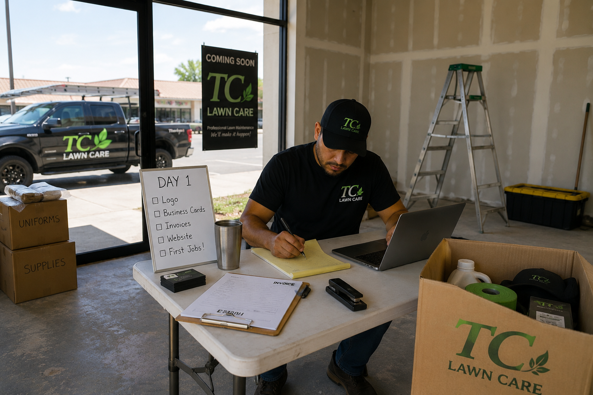
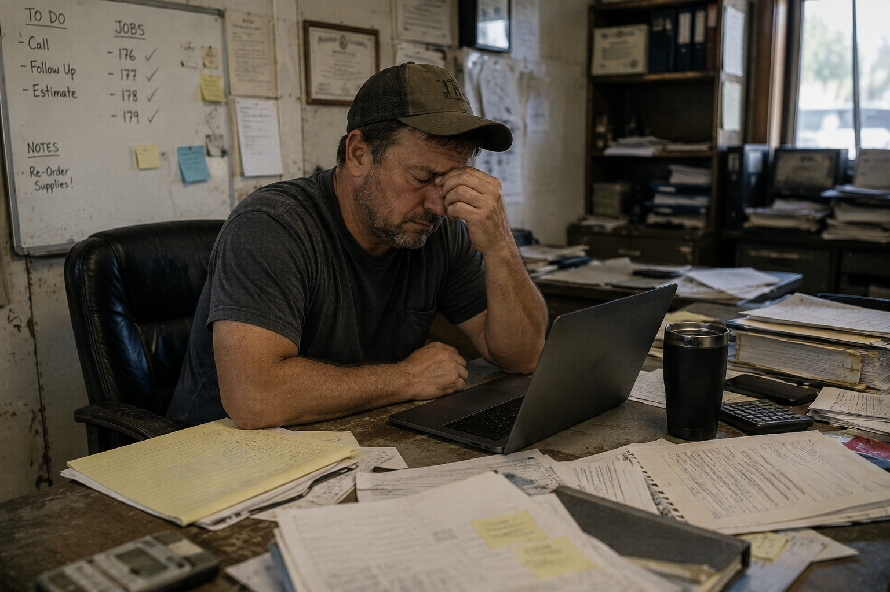

For new & small business ownersMost small business owners are too close to their own operation to see what's actually working, what's leaking money, and what to do next. We give you the outside view — then build you the tools to keep it.

A landscaping business wasn't tracking jobs and customers without ever seeing what the data actually showed — no clear picture of who bought what, how often, or what tended to go together. Once we built a simple system around his real customer data, the patterns were obvious — he started bundling the services people already bought together into packages.
You know your trade. You don't have a business partner who's stepped back and looked at what you've actually built — what's selling, what's costing you more than it should, what you'd see in five minutes if it were someone else's shop. That outside view is the whole job.
It doesn't matter if you're just starting out or you've been doing this for years — one of the two paths below is probably where you fit.
Most owners are sitting on more information than they realize — job history, repeat customers, what sells and when. We show you how to actually use what you're already getting to grow.

Off-the-shelf software is built for someone else's business. We build a tool around exactly how you work, so the data you need is captured automatically — not something you have to remember to log.

A short conversation — how long you've been in business and where things stand right now. Nothing to prepare.
A Zoom session where we go through your actual numbers together — have them handy, whatever form they're in.
Depending on how you're currently tracking things, that determines what's next: consulting, a custom tool, or both.
Every job's written down somewhere. But a notepad can't tell you what your top seller is, what's actually profitable, or what to do next.
It goes out once a year for taxes and never comes back as something you can actually use to run the business day to day.
Both end up with the same thing: an app that shows them, in real time, exactly what their business is actually making — not a guess, not a once-a-year number from an accountant.
Was tracking jobs and customers without ever seeing what the data actually showed — no clear picture of who bought what, how often, or what tended to go together.
Once we built a simple system around his real customer data, the patterns were obvious — he started bundling the services people already bought together into packages.
We're early — this is the first of many. Check back as we add more.

JUST STARTING OUTYou're setting things up now. We help you decide what to track from the start, so you're never guessing what your business is actually telling you.
Book a Free Assessment
FEEL STUCK OR PLATEAUEDYou've been running it a while and something's not moving. We find the specific thing — not "work harder," an actual answer — and help you fix it.
Book a Free AssessmentA short conversation is enough to know if there's something worth fixing. No pressure, no pitch deck.
Book a Free Assessment